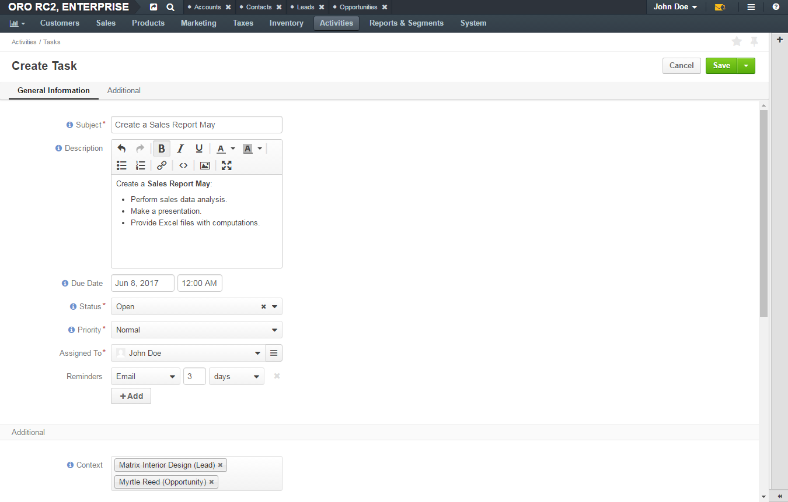
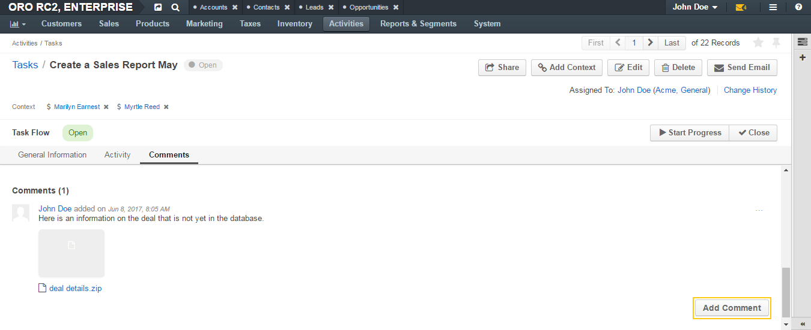
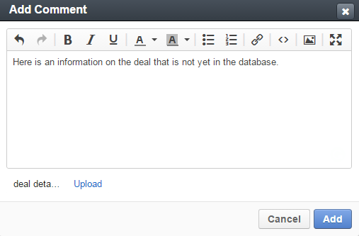

Manage Tasks¶
Each topic of this section guides you through the steps required to perform one of the actions related to task management. As there are usually more than one way to start the same action, only the most straightforward way is described here. Follow the links at the end of the topics to learn about the alternative ways to start the action.
Add a Task¶
To add a task when viewing a list of tasks:
In the main menu, navigate to Activities>Tasks.
The Tasks page opens.
On the Tasks page, click the Create Task button in the upper-right corner of the page.

The Create Task page opens.
On the Create Task page, fill in the required information as described in the Detailed Task Information section.
Click Save and Close in the upper-right corner of the page.
Get more information on adding a task from other perspectives.
Detailed Task Information¶
When adding or editing a task, fill in the following information:
Subject—Short, one-phrase description of what the task is about. It serves as a name of the task.
Description—Detailed statement of what work is to be done in relation to the task. Use the embedded editor to format text, add images, links, etc.
Important
Whether the embedded editor is available, is specified in the configuration. If you have access to the My Configuration page, see the WYSIWYG settings section of the Display Settings description.
If you do not have access to the page, contact your administrator who can enable the editor at the organization level.
Due Date—The day and time when the task must be completed.
Click the day field to select a day in the calendar dialog.
Click the time field to select a time from the list.
Alternatively, you can type in date and time values.
Status— The phase of work on the task. See Task Statuses for more information.
Important
You cannot set the task status if the Task Flow is enabled.
Priority— Nominates an order in which the task should be managed. Can be High, Normal, or Low. Higher-priority tasks should be managed first.
Assigned To—The user who is responsible for doing the work related to the task. The task appears in the calendar of the assignee.
Note
By default, a person who creates an task is selected as its assignee. Change the assignee if required. Select another user from the list. You may use the search field to quickly find the required user: start typing the name of the user and when suggestions appear, click the required name. Alternatively, you may click the hamburger menu next to the field and select the owner in the Select Assigned To dialog.
Reminders—A notification about the upcoming task’s due date.
Click the +Add button to configure when and how OroCommerce and OroCRM remind the participants about the task:
- Specify the type of the notification: whether to show a flash message in Oro application or send the notification email.
- Select the time units in which the time lag between a reminder and the task’s due date is measured: minutes, hours, days, or weeks.
- Enter what number of selected time intervals the time lag between a reminder and the task’s due date comprises.
To remove a reminder, click the x icon next to it.
Note
In Oro applications, a task due date and time is displayed adjusted according to the recipient’s timezone settings both in notification emails and flash messages. (That is, if the task due time is displayed as 7 a.m. at the level of the organization run according to the New York time, the due time displayed in the reminder to the user who uses the Tokio time will be 8 p.m.)
Context—Select a record that has a meaningful relation to the task. Start entering a record name, and when the list of suggestions appears, click the required name to select it. The task is now linked to the selected item and is displayed in its Activity section.
View a Calendar Event¶
To review a task from the task list:
In the main menu, navigate to Activities>Tasks.
On the task list, click the required task.
Alternatively, you can click the More Options menu at the end of the corresponding row and then click the View icon.

Review the task details. For the description of the fields, see step 3 of the Create a task from the Tasks Grid action description.

Get more information on viewing a task from other perspectives.
Edit a Calendar Event¶
To edit a task when viewing a list of tasks:
Open the list of tasks:
- To remove a task of any assignee, open a general list of tasks. For this, in the main menu, navigate to Activities>Tasks. A page with the general list of tasks opens.
- To remove a task assigned to you, open a list of your tasks. For this, in the user menu, click My Tasks.
On the task list, click the More Options menu at the end of the row with the task you want to edit and then click the Edit icon.
Update the task details as necessary. For the description of the fields, see Detailed Task Information.
Click Save and Close in the upper-right corner of the page.
Get more information on editing a task from other perspectives.
Delete a Task¶
To delete a task from a list of tasks:
- Open the list of tasks:
- To remove a task of any assignee, open a general list of tasks. For this, in the main menu, navigate to Activities>Tasks. A page with the general list of tasks opens.
- To remove a task assigned to you, open a list of your tasks. For this, in the user menu, click My Tasks.
- On the task list, click the More Options menu at the end of the row of the task that you would like to delete and then click the Delete icon.
- In the Deletion Confirmation dialog, click Yes, Delete.
Get more information on deleting a task from other perspectives.
Delete a Bulk of Tasks¶
To delete a bulk of tasks from the page with general list of tasks or from the list on the My Tasks page:
Open the list of tasks:
- To remove tasks of any assignee, open a general list of tasks. For this, in the main menu, navigate to Activities>Tasks. A page with the general list of tasks opens.
- To remove tasks assigned to you, open a list of your tasks. For this, in the user menu, click My Tasks.
On the task list, select check boxes in front of the tasks that you would like to delete.
Click the More Options menu at the end of the grid header row and then click Delete.
In the Delete Confirmation dialog, click Yes, Delete.
Tip
Similarly, you can delete multiple tasks that are assigned to the same user from the user’s profile. For this, on the user’s profile page, click Additional Information, navigate to the Tasks subsection, and continue as described in steps 2–4 of this action description.
Add a Context to a Task¶
By adding a record as a context to a task, you specify that this record is somehow related to the task. Entity records that are specified in a task context have the task displayed in the Activity sections on their view pages.
To add a context to an existing task when viewing the task details:
In the main menu, navigate to Activities>Tasks.
On the task list, click the required task.
Alternatively, you can click the More Options menu at the end of the corresponding row and then click the View icon.
On the task view page, click the Add Context button in the upper-right corner of the page.
In the Add Context Entity dialog, select an entity of the related (context) record from the list in the upper-left corner of the dialog.

In the main grid of the dialog, click the required record.
The context record is added and is shown on the task view page under the task name.

Get more information on managing a task context from other perspectives.
Remove a Task’s Context¶
To delete a task’s context when viewing the task details:
In the main menu, navigate to Activities>Tasks.
On the task list, click the required task.
Alternatively, you can click the More Options menu at the end of the corresponding row, and then click the View icon.
On the task view page, under the task name in the upper-left corner of the page, click the x icon next to the context that you want to remove.

Get more information on managing a task context from other perspectives.
Comment on a Task¶
To comment on a task when viewing the task details:
In the main menu, navigate to Activities>Tasks.
On the task list, click the required task.
Alternatively, you can click the More Options menu at the end of the corresponding row and then click the View icon.
On the task view page, click Comments.
In the Comments section, click the Add Comment button in the lower-right corner.
In the Add Comment dialog, enter your comment. If rich text functionality is enabled for you, you can format your comment in the editor. You can also add an attachment to your comment.
Click the Add button.
Your comment appears in the Comments section of the task view page.
Tip
You can edit or remove your comment: find your comment and click the More Options menu at the end of the corresponding row. Then click the Edit / Delete icon.
Get more information about commenting on a task from other perspectives.
Unshare a Calendar Event¶
In the main menu, navigate to Activities>Tasks.
On the task list, click the required task.
Alternatively, you can click the More Options menu at the end of the corresponding row and then click the View icon.
On the task view page, click the Send Email button in the upper-right corner of the page.
In the Send Email dialog, specify the required data. For help, see Compose A New Email.
- Click Send.